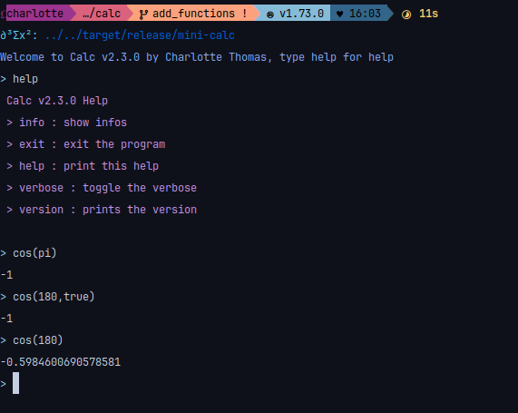

Functions
The following functions are available
Trigonometry
- sin (vectorized)
- cos (vectorized)
- tan (vectorized)
Hyperbolic trigonometry
- sinh (vectorized)
- cosh (vectorized)
- tanh (vectorized)
Reverse trigonometry
- asin (vectorized)
- acos (vectorized)
- atan (vectorized)
Exponentiation
- exp (vectorized)
- ln (alias: log) (vectorized)
Vectors
- norm
Matrices
- det
- invert
Plot
- plot
- termplot
Other
- sqrt (vectorized)
- factorial (aliases: fact or !)
- abs
- ceil
- floor
- round
Trigonometry
For trigonometry, the input are assumed to be in radian, if not, you have to put "false" or "true" as second argument, example shown bellow 
{kind=link}
Exp/ln
If you use the exp function you can pass a second argument for the base you are using, if no second arguments are passed this is assumed to be in natural base

Root
You can take the nth root with the sqrt function, by default it takes the second root.
{kind=link}
Round
You can round to the nth decimal with the round function, by default it round to the integer (floor)

Partial function
The language supports partial function
{kind=link}
Vectorization
Function has been vectorized, for example
{kind=link}